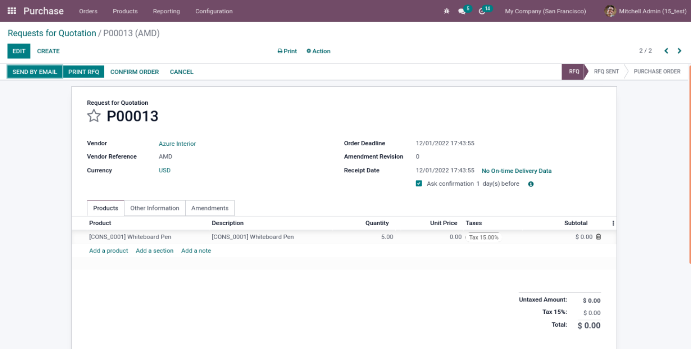
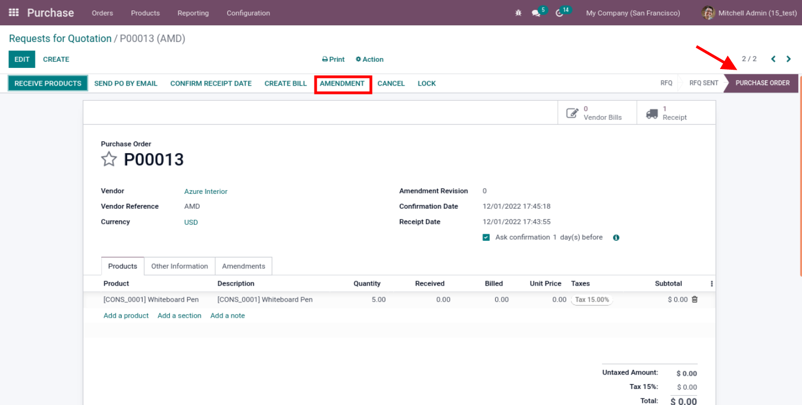
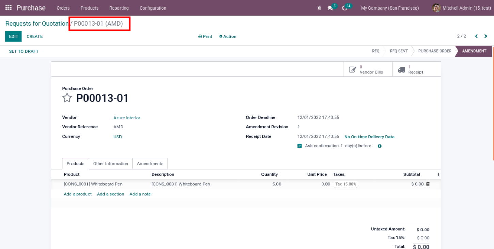
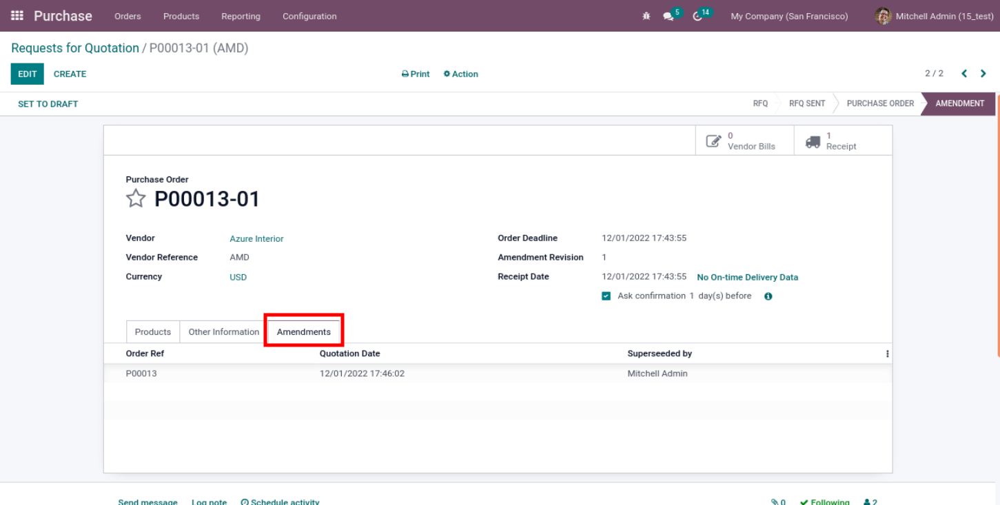
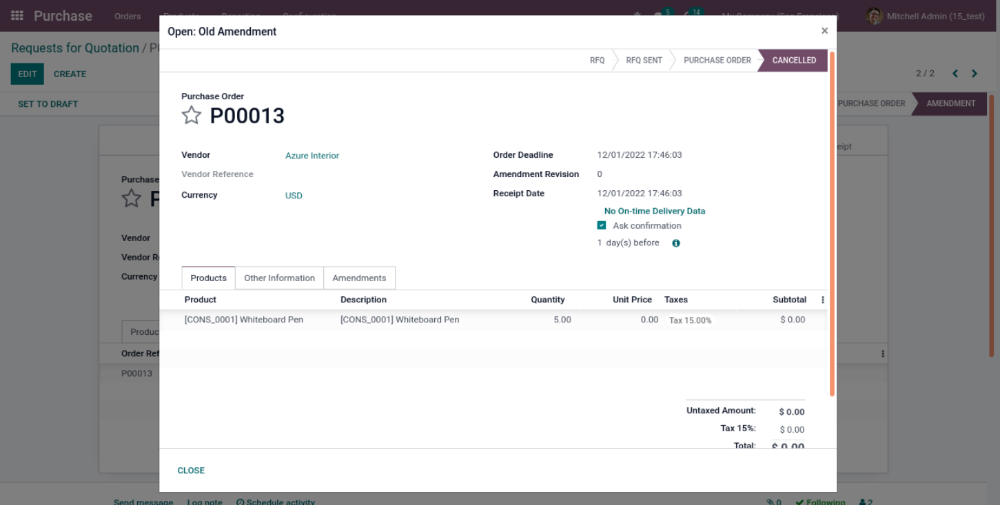

In Odoo Once after the confirmation of purchase order, system will not allow us to modify the Purchase order and purchase order lines like Product, Order quantity and Terms & Condition. After installing the Purchase Amendment Module after the confirmation of a purchase order, a button will appear on the screen as amendment. When user clicks on this button system will cancel the incoming shipment against the order and moves the order state to Draft after making the required changes, user can again confirm the purchase order.
Creating a Purchase Order and confirming the purchase order
Once the order gets confirmed state has been moved to Purchase order. Amendment button is appearing on screen.
If user clicks on the amendment button state has been moved to amendment, on the right side of the same form, Set to Draft.
If set to draft button is pressed, same order is set to quotation, so that users are allowed to change the order and order lines. Also able to view the amendment history.
To view the previous order click on the list, a wizard will appear on the screen there user can view the order lines with total amount and taxes.
